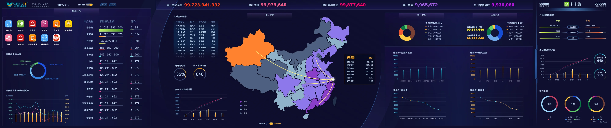
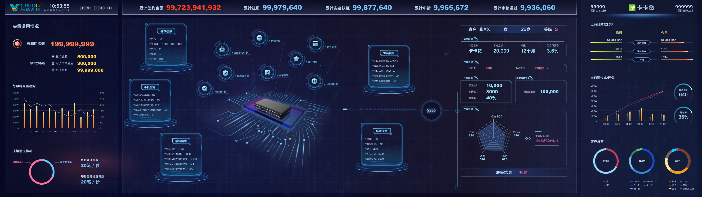
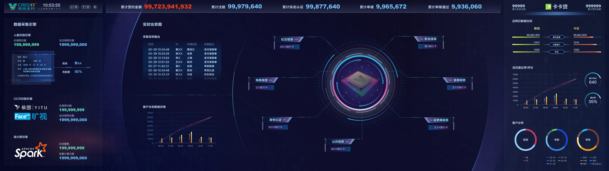
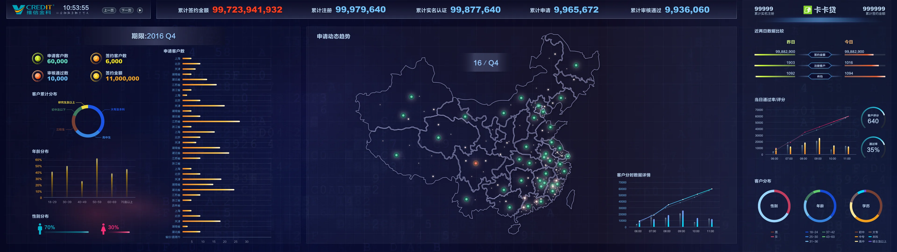
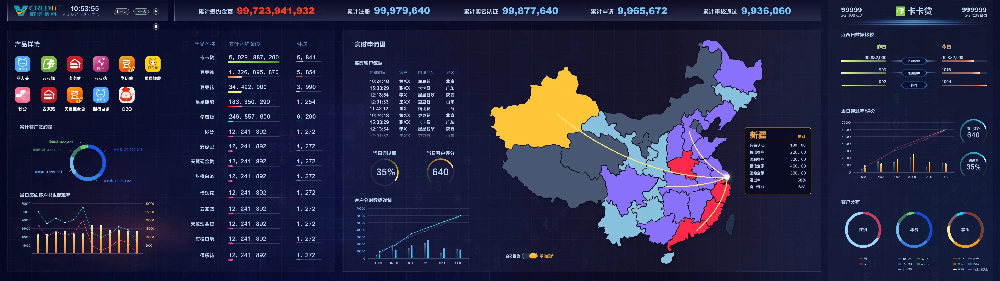

06 / BUSINESS OVERVIEW
全国业务总览
以全国业务流向和产品签约为中心，同步展示客户、产品与时间趋势。

01 / FINANCE EXPO
EXHIBITION · FINTECH · COMMAND CENTER

设计围绕「数据概览—区域洞察—业务分析—技术能力」展开。固定的全局 KPI 和右侧客群信息保持上下文，中央主视区根据不同讲解场景切换。
以全国业务流向和产品签约为中心，同步展示客户、产品与时间趋势。

用地图、流向线和多周期趋势展现金融业务的全国分布。
把客户基础信息、多类数据和规则结果串联成可讲解的决策链路。

围绕身份、电商、社交、金融和运营信息，展示多源数据的聚合能力。

将申请、签约、客群构成和地域分布组合为季度分析视图。

从产品签约、客户构成与区域分布三个视角展现单产品表现。
